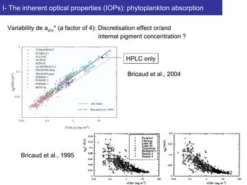
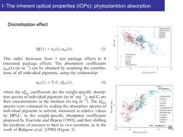
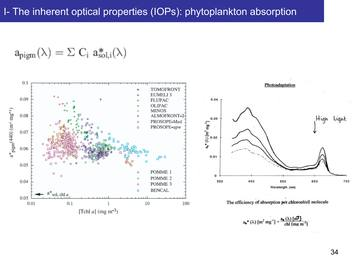
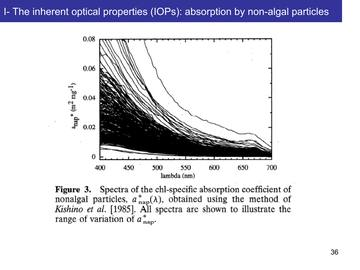
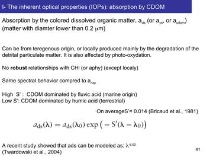
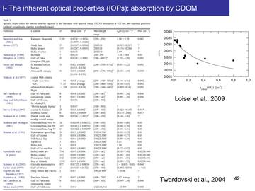
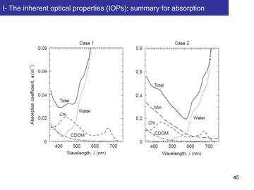

Home › C · Absorption
Absorption by phytoplankton, non-algal particles (NAP) and coloured dissolved organic matter (CDOM) is added to that of water (module B). Each has a distinct spectral signature, which is what allows us to separate them.
Phytoplankton absorption and the package effect
Pigments absorb in the blue (Chl a 443 nm, carotenoids 450–500 nm, Chl c 465 nm) and Chl a, b, c also in the red (675, 650, 635 nm) (slides 28–29). The Chl-specific absorption a*ph = aph/Chl falls with Chl because of the package effect:
Home-made check for a homogeneous sphere (Morel & Bricaud 1981 form, verified by ray-path integration): Q*a = 0.93, 0.71, 0.28 for ρ = 0.2, 1, 5. ρ is an illustrative parameter. Photoacclimation also lowers a*ph at high light (slide 34).
Non-algal particles and CDOM
NAP (detritus, heterotrophic bacteria, minerals) and CDOM both increase exponentially toward short wavelengths (slides 35, 41):
Numerical examples (Python). acdom(443)/acdom(412) = 0.648; NAP: 0.711; a(350)/a(440) = 3.53 for CDOM and 2.69 for NAP. Because the shapes are close, algorithms use acdm = acdom + anap, about 90 % CDOM at global scale (slide 43).
Budget in Case 1 and Case 2
Slide 45 compares the contribution of water, Chl, CDOM and minerals to the total absorption in Case 1 (axis 0–0.08 m⁻¹) and Case 2 (axis 0–0.8 m⁻¹). In Case 1, water and Chl control the spectrum; in Case 2, minerals and CDOM raise the blue absorption and move the minimum of the total toward ≈ 570 nm (read from graph, ±10 %).
Worked example, quick Q&A and memory hooks
acdom(412) = 0.30 m⁻¹, S′ = 0.014 nm⁻¹ ⇒ acdom(443) = 0.30·e−0.014·31 = 0.194 m⁻¹. The e-folding distance is 1/S′ = 71 nm: every 71 nm toward the red the absorption drops by a factor e.
Quick Q&A
A: Cells are larger and pigments shade each other (package effect, slides 32–33).
A: On filters with the Kishino et al. (1985) technique (slide 35).
Memory hooks
- CDOM and NAP: exponential, steep to the blue.CDOM, NAP: hàm mũ, dốc về phía xanh.
- Big cell = less absorption per pigment.Tế bào lớn hấp thụ ít hơn trên mỗi sắc tố.
Lecture slides for this module (Loisel, Marine Optics)
13 slides of the lecture “Marine Optics” (H. Loisel, LOG). Numbers refer to the slide number in the file. Click a page to enlarge; browse all pages.













Exam checklist — points you must mention
- Name the pigment peaks (Chl a 443/675, carotenoids 450–500, Chl c 465/635).
- Define Q*_a and explain why a*_ph decreases with Chl.
- Write the exponential model; give S′ ≈ 0.014 (CDOM) and S ≈ 0.011 (NAP).
- Explain a_cdm = a_cdom + a_nap.
- Describe the absorption budget of Case 1 vs Case 2.
- Sắc tố hấp thụ xanh (443 nm) và đỏ (675 nm); hiệu ứng gói làm a*_ph giảm khi Chl tăng.
- CDOM và NAP hấp thụ tăng theo hàm mũ về phía xanh (S′ ≈ 0,014; S ≈ 0,011).
- a_cdm ≈ 90 % là CDOM ở quy mô toàn cầu.
Practice calculations
These tools run in your browser and are checked against Python:
CDOM/NAP exponential absorption Package effect Q*_a
Lecture slides (10 slides; use ← → keys or the buttons)
Quick self-check (10 of 16 questions)
Open the full bank: 16 multiple-choice + 2 essay questions →